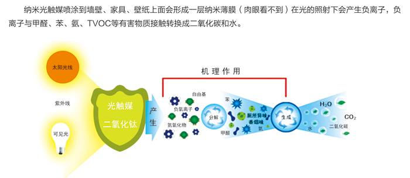

家住朝阳区小关北里14号楼的刘女士15年初新装置了房子，装修后房子一直闲置至今已有大半年，据刘女士说房子自从装修后开窗比较少，偶尔会过来开下窗，有时候因天气不好把窗户关好后就过段时间过来发现屋里味道刺鼻后再开几天，这样反复至今。直到要入住了发现室内甲醛超标严重才想起来联系境享环境进行专业室内空气治理，我们的技术人员到现场时刘女士家的窗子已经又连续关了1个多星期了。
技术支持
 ◆ 通过多项权威认证。 通过英国ITS抗菌、甲醛降解测试。 通过新加坡PSB抗菌、防霉及重金属含量测试。 通过中国疾病预防控制中心口毒性测试。 通过中国疾病预防控制中心皮肤刺激测试。 通过国家环保总局化学毒性及甲醛、苯、TVOC等有害气体降解率的测试。 ◆ 食品级安全性。 新净界光触媒通过中国疾病预防控制中心的急性经口毒性实验和皮肤刺激实验测试，对人体无任何毒性和刺激性。 ◆ 行业最高水平的纳米技术，纳米粒径约为5纳米。 在光触媒涂膜面积相等的前提下，喷涂在同等表面积上的光触媒粒径越小，其比表面积越大，与外界污染气体的接触面也就越大，光触媒的降解效率也就越高，治理效果越好。新净界光触媒的纳米粒径约为5纳米（批量生产、常态下），为行业最高水平。 ◆ 专利生产技术，不含黏合剂与分散剂。 为了控制光触媒粒子的团聚（团聚后粒径增大，治理效果降低）和增加光触媒在被喷涂物表面的附着力，目前世面上的光触媒大多添加了分散剂和黏合剂，而这些分散剂和黏合剂大多是有机物，一方面影响光触媒的比表面积，影响降解效率，另一方面，这些分散剂和黏合剂会带来一些二次污染，对人有一定的刺激作用。奥因光触媒采用化学修饰法（已申请国家专利）很好地解决了团聚和附着力问题，不须加分散剂和黏合剂即能保持光触媒粒子的粒径和粘力（附着力为最高级别0级），同时，因为不含分散剂和黏合剂，对人无任何不良影响。 ◆ 可见光响应技术 业内最高的光利用率，600纳米以下波长的光均可对新净界光触媒进行催化（普通光触媒须388纳米波长以下的光才能催化），太阳光和普通日光灯下即能发生效用。 业内最高的光利用率，600纳米以下波长的光均可对新净界光触媒进行催化（普通光触媒须388纳米波长以下的光才能催化），太阳光和普通日光灯下即能发生效用。